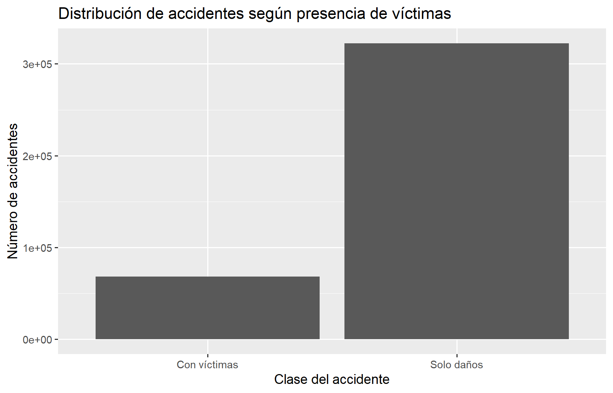
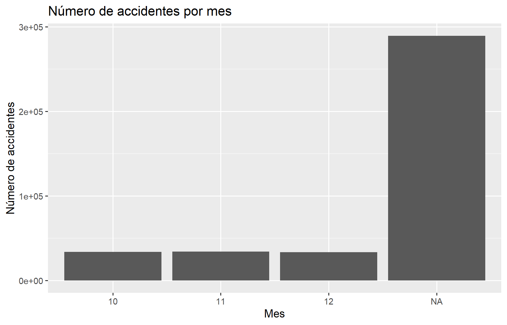
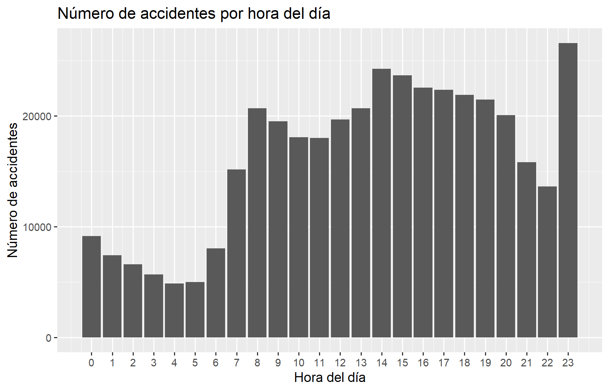
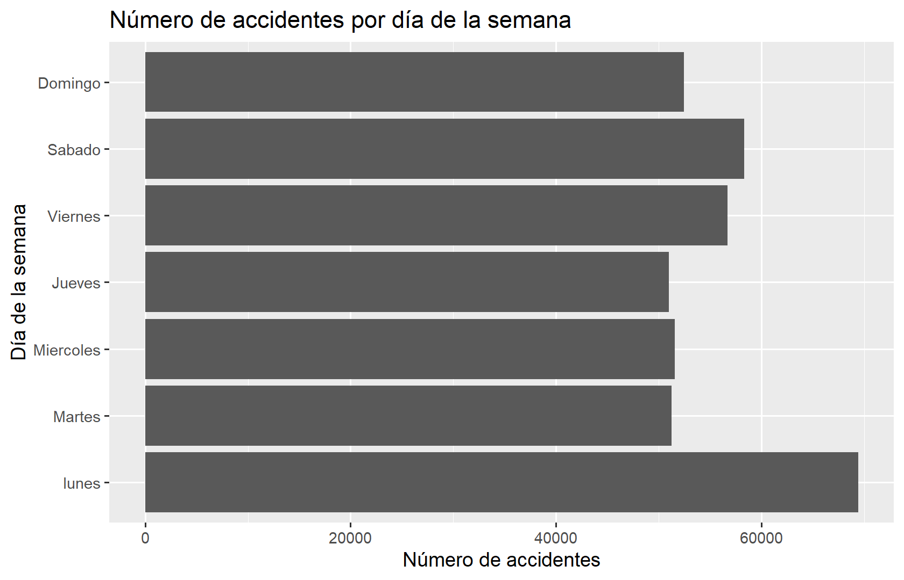
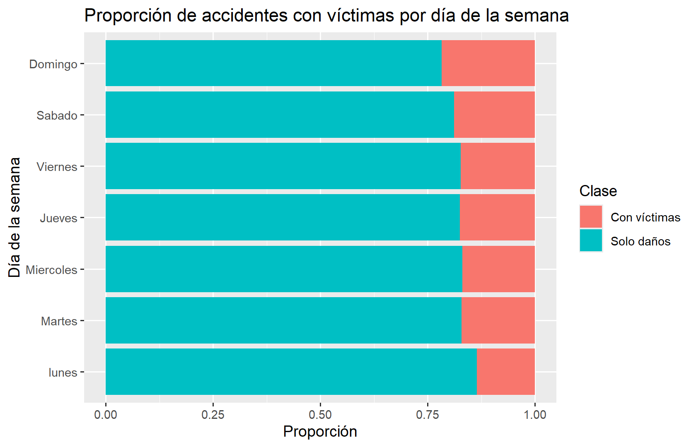

Code
library(readr)
library(dplyr)
library(ggplot2)Al finalizar este capítulo, el lector será capaz de:
ggplot2.Después de preparar los datos, el siguiente paso en un proyecto de aprendizaje automático es explorarlos.
El análisis exploratorio de datos, también conocido como Exploratory Data Analysis o EDA, consiste en revisar, resumir, visualizar e interpretar los datos antes de construir modelos.
Si una variable categórica tiene categorías \(c_1, c_2, \ldots, c_k\), la frecuencia absoluta de una categoría \(c_j\) se puede representar como:
\[ n_j = \sum_{i=1}^{n} I(y_i = c_j) \]
donde \(I(y_i = c_j)\) es una función indicadora:
\[ I(y_i = c_j) = \left\{ \begin{array}{ll} 1, & \text{si } y_i = c_j \\ 0, & \text{si } y_i \neq c_j \end{array} \right. \]
La proporción de la categoría \(c_j\) es:
\[ p_j = \frac{n_j}{n} \]
En nuestro caso, una proporción importante es:
\[ p_{\text{víctimas}} = \frac{\text{número de accidentes con víctimas}} {\text{número total de accidentes}} \]
Podemos estudiar la proporción de accidentes con víctimas dado un tipo de accidente:
\[ P(\text{Con víctimas} \mid \text{Tipo de accidente}) \]
De forma empírica, esta proporción se calcula como:
\[ \hat{P}(\text{Con víctimas} \mid T = t) = \frac{ \text{número de accidentes con víctimas del tipo } t }{ \text{número total de accidentes del tipo } t } \]
Algoritmo: Análisis exploratorio de datos
Entrada:
- Base de datos preparada
- Variable respuesta
- Variables predictoras
Proceso:
1. Revisar dimensiones de la base.
2. Revisar nombres y tipos de variables.
3. Calcular frecuencias de la variable respuesta.
4. Calcular proporciones de la variable respuesta.
5. Analizar variables temporales, categóricas y numéricas.
6. Construir gráficas exploratorias.
7. Cruzar variables predictoras con la variable respuesta.
8. Identificar patrones, desbalances y posibles problemas.
Salida:
- Tablas descriptivas
- Gráficas exploratorias
- Primeras hipótesis sobre los datoslibrary(readr)
library(dplyr)
library(ggplot2)ruta_atus_ml <- "datos/atus_ml_preparado.csv"
file.exists(ruta_atus_ml)[1] TRUEif (file.exists(ruta_atus_ml)) {
atus_ml <- read_csv(ruta_atus_ml, show_col_types = FALSE)
print("Base preparada cargada correctamente.")
} else {
atus_ml <- NULL
print("No se encontró el archivo datos/atus_ml_preparado.csv. Ejecuta primero el capítulo 2.")
}[1] "Base preparada cargada correctamente."if (!is.null(atus_ml)) {
atus_ml <- atus_ml |>
mutate(
ID_HORA_NUM = as.numeric(ID_HORA),
DIASEMANA = factor(
DIASEMANA,
levels = c("lunes", "Martes", "Miercoles", "Jueves", "Viernes", "Sabado", "Domingo")
),
accidente_con_victimas = factor(
accidente_con_victimas,
levels = c("Con víctimas", "Solo daños")
)
)
}if (!is.null(atus_ml)) {
dim(atus_ml)
head(atus_ml)
names(atus_ml)
}[1] "accidente_con_victimas" "MES" "ID_HORA"
[4] "DIASEMANA" "TIPACCID" "CAUSAACCI"
[7] "ID_HORA_NUM" if (!is.null(atus_ml)) {
str(atus_ml)
}tibble [390,627 × 7] (S3: tbl_df/tbl/data.frame)
$ accidente_con_victimas: Factor w/ 2 levels "Con víctimas",..: 2 2 1 2 2 1 1 2 2 2 ...
$ MES : chr [1:390627] "01" "01" "01" "01" ...
$ ID_HORA : chr [1:390627] "02" "03" "04" "05" ...
$ DIASEMANA : Factor w/ 7 levels "lunes","Martes",..: 1 1 1 1 1 1 1 1 1 1 ...
$ TIPACCID : chr [1:390627] "Colisión con vehículo automotor" "Colisión con objeto fijo" "Colisión con peatón (atropellamiento)" "Colisión con objeto fijo" ...
$ CAUSAACCI : chr [1:390627] "Conductor" "Conductor" "Conductor" "Conductor" ...
$ ID_HORA_NUM : num [1:390627] 2 3 4 5 6 7 12 13 18 20 ...if (!is.null(atus_ml)) {
table(atus_ml$accidente_con_victimas)
}
Con víctimas Solo daños
68108 322519 if (!is.null(atus_ml)) {
round(100 * prop.table(table(atus_ml$accidente_con_victimas)), 2)
}
Con víctimas Solo daños
17.44 82.56 En esta base se observa un desbalance importante: aproximadamente 82.56% de los accidentes corresponden a solo daños, mientras que 17.44% corresponden a accidentes con víctimas.
if (!is.null(atus_ml)) {
ggplot(atus_ml, aes(x = accidente_con_victimas)) +
geom_bar() +
labs(
title = "Distribución de accidentes según presencia de víctimas",
x = "Clase del accidente",
y = "Número de accidentes"
)
}
if (!is.null(atus_ml)) {
accidentes_mes <- atus_ml |>
count(MES) |>
arrange(as.numeric(MES))
accidentes_mes
}# A tibble: 12 × 2
MES n
<chr> <int>
1 01 31600
2 02 32208
3 03 33237
4 04 32666
5 05 34665
6 06 31737
7 07 30062
8 08 31800
9 09 31351
10 10 33771
11 11 34047
12 12 33483if (!is.null(atus_ml)) {
ggplot(accidentes_mes, aes(x = factor(MES, levels = sort(unique(as.numeric(MES)))), y = n)) +
geom_col() +
labs(
title = "Número de accidentes por mes",
x = "Mes",
y = "Número de accidentes"
)
}
if (!is.null(atus_ml)) {
accidentes_hora <- atus_ml |>
count(ID_HORA_NUM) |>
arrange(ID_HORA_NUM)
accidentes_hora
}# A tibble: 24 × 2
ID_HORA_NUM n
<dbl> <int>
1 0 9143
2 1 7400
3 2 6594
4 3 5694
5 4 4880
6 5 4986
7 6 8034
8 7 15159
9 8 20666
10 9 19486
# ℹ 14 more rowsif (!is.null(atus_ml)) {
ggplot(accidentes_hora, aes(x = ID_HORA_NUM, y = n)) +
geom_col() +
scale_x_continuous(breaks = 0:23) +
labs(
title = "Número de accidentes por hora del día",
x = "Hora del día",
y = "Número de accidentes"
)
}
if (!is.null(atus_ml)) {
accidentes_dia <- atus_ml |>
count(DIASEMANA) |>
arrange(DIASEMANA)
accidentes_dia
}# A tibble: 7 × 2
DIASEMANA n
<fct> <int>
1 lunes 69412
2 Martes 51215
3 Miercoles 51580
4 Jueves 50954
5 Viernes 56708
6 Sabado 58321
7 Domingo 52437if (!is.null(atus_ml)) {
ggplot(accidentes_dia, aes(x = DIASEMANA, y = n)) +
geom_col() +
coord_flip() +
labs(
title = "Número de accidentes por día de la semana",
x = "Día de la semana",
y = "Número de accidentes"
)
}
if (!is.null(atus_ml)) {
accidentes_tipo <- atus_ml |>
count(TIPACCID) |>
arrange(desc(n))
accidentes_tipo
}# A tibble: 13 × 2
TIPACCID n
<chr> <int>
1 Colisión con vehículo automotor 224720
2 Colisión con motocicleta 61869
3 Colisión con objeto fijo 43119
4 Certificado cero 15678
5 Volcadura 13371
6 Colisión con peatón (atropellamiento) 11052
7 Salida del camino 10067
8 Colisión con ciclista 4033
9 Otro 2934
10 Caída de pasajero 2153
11 Colisión con animal 884
12 Incendio 455
13 Colisión con ferrocarril 292if (!is.null(atus_ml)) {
accidentes_tipo_top <- accidentes_tipo |>
slice_max(n, n = 10)
ggplot(accidentes_tipo_top, aes(x = reorder(TIPACCID, n), y = n)) +
geom_col() +
coord_flip() +
labs(
title = "Tipos de accidente más frecuentes",
x = "Tipo de accidente",
y = "Número de accidentes"
)
}
if (!is.null(atus_ml)) {
accidentes_causa <- atus_ml |>
count(CAUSAACCI) |>
arrange(desc(n))
accidentes_causa
}# A tibble: 6 × 2
CAUSAACCI n
<chr> <int>
1 Conductor 360051
2 Certificado cero 15678
3 Mala condición del camino 5991
4 Falla del vehículo 3978
5 Otra 2639
6 Peatón o pasajero 2290if (!is.null(atus_ml)) {
accidentes_causa_top <- accidentes_causa |>
slice_max(n, n = 10)
ggplot(accidentes_causa_top, aes(x = reorder(CAUSAACCI, n), y = n)) +
geom_col() +
coord_flip() +
labs(
title = "Causas presuntas más frecuentes",
x = "Causa presunta",
y = "Número de accidentes"
)
}
if (!is.null(atus_ml)) {
tipos_top <- atus_ml |>
count(TIPACCID) |>
slice_max(n, n = 10) |>
pull(TIPACCID)
atus_tipo_top <- atus_ml |>
filter(TIPACCID %in% tipos_top)
ggplot(atus_tipo_top, aes(x = TIPACCID, fill = accidente_con_victimas)) +
geom_bar(position = "fill") +
coord_flip() +
labs(
title = "Proporción de accidentes con víctimas según tipo de accidente",
x = "Tipo de accidente",
y = "Proporción",
fill = "Clase"
)
}
if (!is.null(atus_ml)) {
ggplot(atus_ml, aes(x = ID_HORA_NUM, fill = accidente_con_victimas)) +
geom_bar(position = "fill") +
scale_x_continuous(breaks = 0:23) +
labs(
title = "Proporción de accidentes con víctimas por hora",
x = "Hora del día",
y = "Proporción",
fill = "Clase"
)
}
if (!is.null(atus_ml)) {
ggplot(atus_ml, aes(x = DIASEMANA, fill = accidente_con_victimas)) +
geom_bar(position = "fill") +
coord_flip() +
labs(
title = "Proporción de accidentes con víctimas por día de la semana",
x = "Día de la semana",
y = "Proporción",
fill = "Clase"
)
}
if (!is.null(atus_ml)) {
resumen_clase <- atus_ml |>
group_by(accidente_con_victimas) |>
summarise(
total = n(),
hora_promedio = mean(ID_HORA_NUM, na.rm = TRUE),
hora_minima = min(ID_HORA_NUM, na.rm = TRUE),
hora_maxima = max(ID_HORA_NUM, na.rm = TRUE),
.groups = "drop"
)
resumen_clase
}# A tibble: 2 × 5
accidente_con_victimas total hora_promedio hora_minima hora_maxima
<fct> <int> <dbl> <dbl> <dbl>
1 Con víctimas 68108 13.6 0 23
2 Solo daños 322519 13.7 0 23En este capítulo aprendimos a cargar una base preparada, revisar dimensiones, analizar la variable respuesta, construir tablas de frecuencia, graficar accidentes por mes, hora, día, tipo y causa, e interpretar patrones iniciales.
En el siguiente capítulo construiremos nuestro primer modelo supervisado para clasificación: una regresión logística.